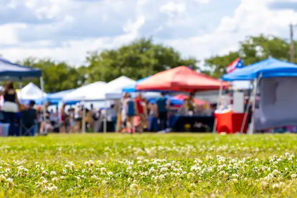
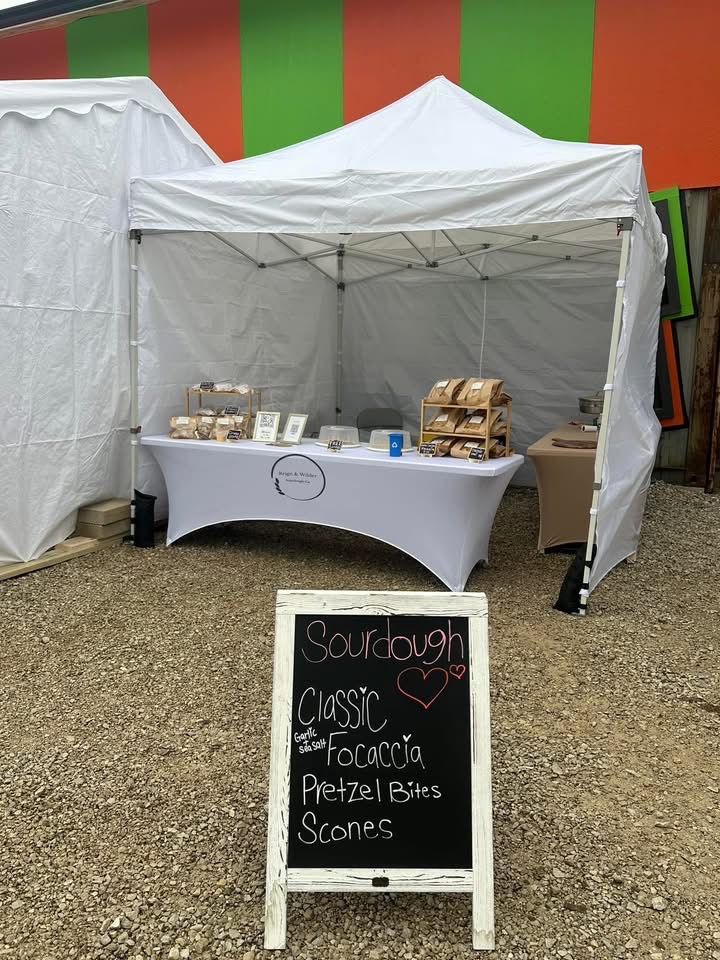
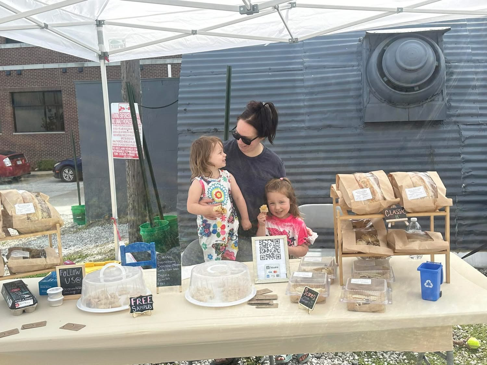
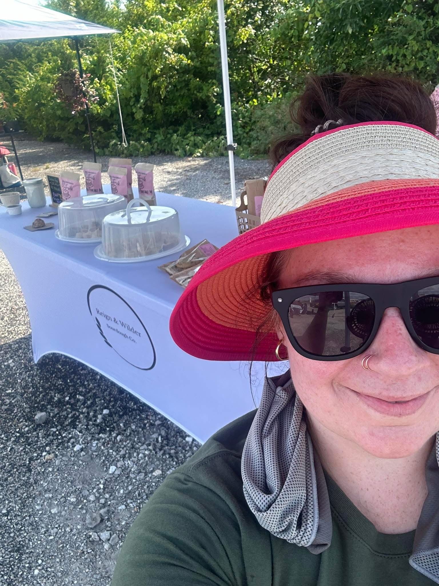
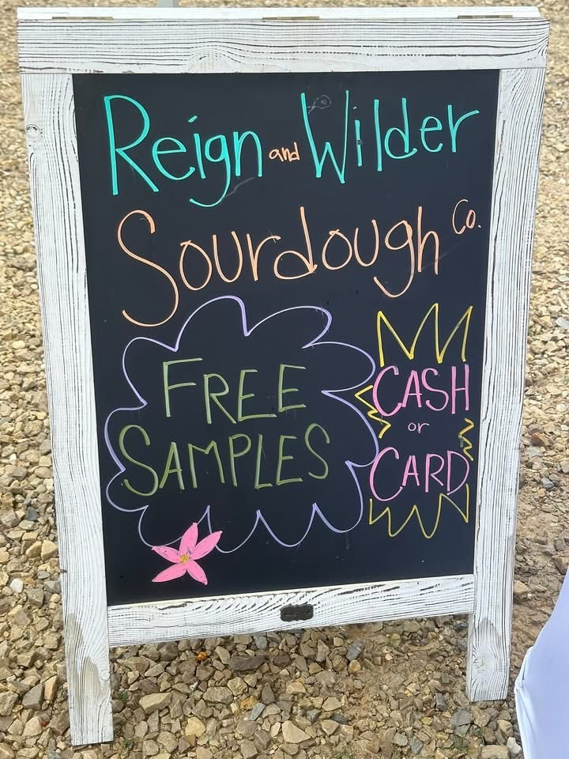
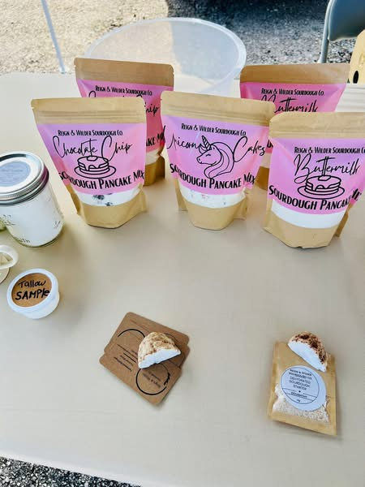

Local Markets & Events
Find Reign & Wilder Around Rogersville
Find Reign & Wilder at Rogersville, Missouri farmers markets, bakery pop-ups, and community events. Come shop fresh sourdough bread, sweets, and small-batch baked goods in person, or visit our Shop page and weekly menu to see what’s available.
Rogersville Pop-Up Market | Sourdough & Local Vendors
The Rogersville Pop-Up Market in Rogersville, Missouri is a community-driven farmers market featuring local bakers, makers, and small businesses. Built in partnership with the Rogersville Chamber of Commerce, this market brings together fresh sourdough bread, baked goods, handmade products, and local vendors in one place. Reign & Wilder Sourdough Co. regularly participates, offering artisan sourdough bread, pastries, and small-batch baked goods to the Rogersville community.
Location
314 S Main St, Rogersville, MO
Near Apple Market & O’Reilly Auto Parts
Time
Market hours vary by event date.
Check individual event listings for exact times.
2026 Market Dates
- May: 16, 30
- June: 13
- July: 11, 25
- August: 8, 22
- September: 5, 19
- October: 3
Market Photos







Upcoming Events
The Habit Coffee Company – Mother’s Day Market
Date: May 9
Location: 5035 MO-125, Rogersville, MO
A soft launch of a future growers market focused on local goods, home bakers, gardeners, farmers, and beekeepers. A community-driven event centered around sharing knowledge, supporting each other, and building something local.
Independence Day Celebration
Date: June 27
Time: 3 PM – 7 PM
Location: Rogersville City Park
Farm & Harvest Festival
Date: October 17
Time: 9 AM – 2 PM
Location: Rogersville City Park
Rogersville Christmas Market
Date: December 12
Time: 9 AM – 2 PM
Location: Logan-Rogersville Upper Elementary
Plan Your Visit
What to Expect
Reign & Wilder brings fresh sourdough bread, sweets, and seasonal baked goods to Rogersville farmers markets and local events throughout the year.
Arrive Early
Popular items can sell quickly, especially at smaller community markets and seasonal events. Arriving early gives you the best selection.
Follow for Updates
Event hours, weather changes, and special menus may shift. Follow Reign & Wilder on social media for the latest event updates and market announcements.